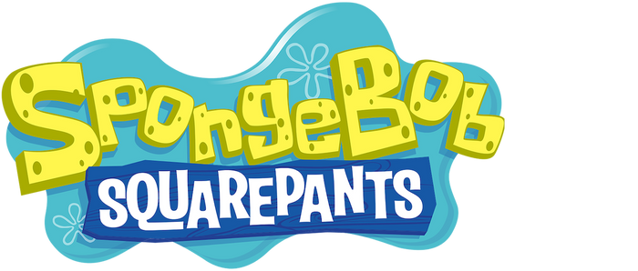

Trama

Es una serie acerca de una esponja de mar amarilla, llamada Bob Esponja Pantalones Cuadrados, que
vive en una piña en el fondo del mar en la ciudad de Fondo de Bikini. Es un cocinero entusiasta que
trabaja en el restaurante de comida rápida llamado el Crustáceo Cascarudo. Bob Esponja es conocido por su
optimismo, su entusiasmo, su torpeza y su amor por las medusas.
La serie sigue las aventuras de Bob Esponja y sus amigos. Juntos, se enfrentan a una variedad de desafíos y aventuras, desde atrapar medusas hasta salvar el día de los malvados planes de Plankton, el dueño del restaurante rival, el Balde de Carnada, que se sitúa enfrente del Crustáceo Cascarudo. El restaurante de Plankton vende principalmente carnada, considerados en su mayoría no comestibles por los habitantes de Fondo de Bikini, y como resultado de su restaurante es un fracaso total.